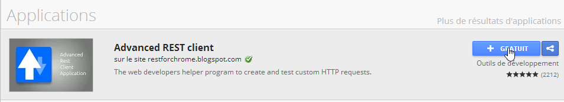
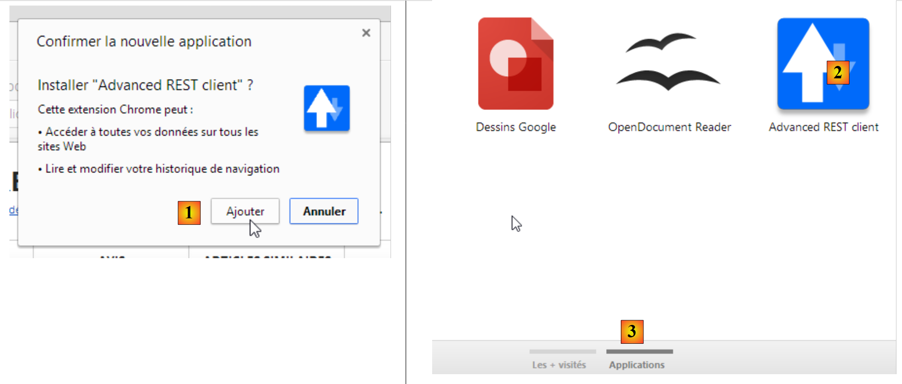

1. Introduzione
Il PDF di questo documento è disponibile |QUI|.
Gli esempi contenuti in questo documento sono disponibili |QUI|.
In questa sede, intendiamo introdurre, attraverso alcuni esempi, i concetti chiave di ASP.NET MVC, un framework web .NET che fornisce un'infrastruttura per lo sviluppo di applicazioni web secondo il modello MVC (Model–View–Controller).
La comprensione degli esempi in questo documento richiede pochi prerequisiti. È necessaria solo una conoscenza di base del linguaggio C#. Questa può essere trovata nel documento Introduzione al linguaggio C# all'URL [https://stahe.github.io/it-csharp-mai-2008/]. Viene fornito un caso di studio per mettere in pratica le conoscenze acquisite su ASP.NET MVC. Esso utilizza l'ORM (Object-Relational Mapper) Entity Framework. Questo ORM è presentato nel documento Introduzione a Entity Framework 5 Code First, disponibile all'indirizzo [https://stahe.github.io/it-ef5cf-oct-2012/].
I vari esempi contenuti in questo documento sono disponibili all'URL [https://stahe.github.io/it-aspnetmvc-nov-2013/] come file ZIP scaricabile.
Questo documento è incompleto sotto molti aspetti. Per saperne di più su ASP.NET MVC, è possibile consultare i seguenti riferimenti:
- [rif1]: il libro "Pro ASP.NET MVC 4" scritto da Adam Freeman e pubblicato da Apress. È un libro eccellente. Se fosse disponibile online gratuitamente e in francese, questo documento non sarebbe necessario. Consiglio a chiunque ne abbia la possibilità di imparare ASP.NET MVC utilizzando questo libro. Il codice sorgente degli esempi del libro è disponibile gratuitamente all'indirizzo [http://www.apress.com/9781430242369];
- [rif2]: il sito web del framework [http://www.asp.net/mvc]. Lì troverete tutto il materiale necessario per lo studio autonomo. Una versione in francese è disponibile all'URL [http://dotnet.developpez.com/mvc/];
- il sito web [developpez.com] dedicato ad ASP.NET [http://dotnet.developpez.com/aspnet/ ].
Questo documento è stato scritto in modo da poter essere letto senza un computer a portata di mano. Pertanto, sono incluse molte schermate.
1.1. Il ruolo di ASP.NET MVC in un'applicazione web
Per prima cosa, vediamo dove si colloca ASP.NET MVC nello sviluppo di un'applicazione web. Nella maggior parte dei casi, essa si basa su un'architettura a più livelli come quella illustrata di seguito:
 |
- il livello [Web] è quello a contatto con l'utente dell'applicazione web. L'utente interagisce con l'applicazione web attraverso le pagine web visualizzate da un browser. È in questo livello che risiede ASP.NET MVC, e solo in questo livello;
- il livello [business] implementa la logica di business dell'applicazione, come il calcolo di uno stipendio o di una fattura. Questo livello utilizza i dati provenienti dall'utente tramite il livello [Web] e dal DBMS tramite il livello [DAO];
- Il livello [DAO] (Data Access Objects), il livello [ORM] (Object Relational Mapper) e il connettore ADO.NET gestiscono l'accesso ai dati nel DBMS. Il livello [ORM] funge da ponte tra gli oggetti gestiti dal livello [DAO] e le righe e le colonne delle tabelle in un database relazionale. Nel mondo .NET vengono comunemente utilizzati due ORM: NHibernate (http://sourceforge.net/projects/nhibernate/) ed Entity Framework (http://msdn.microsoft.com/en-us/data/ef.aspx);
- l'integrazione di questi livelli può essere ottenuta utilizzando un contenitore di iniezione delle dipendenze come Spring (http://www.springframework.net/);
La maggior parte degli esempi forniti di seguito utilizzerà un solo livello, il livello [Web]:
 |
Tuttavia, questo documento si concluderà con la realizzazione di un'applicazione web multistrato:
 |
1.2. Il modello di sviluppo ASP.NET MVC
ASP.NET MVC implementa il modello architettonico MVC (Model–View–Controller) come segue:
 |
L'elaborazione di una richiesta del client procede come segue:
- richiesta - gli URL richiesti hanno il formato http://machine:port/contexte/Controlleur/Action/param1/param2/....?p1=v1&p2=v2&... Il [Front Controller] utilizza un file di configurazione per "instradare" la richiesta al controller corretto e all'azione corretta all'interno di quel controller. Per farlo, utilizza il percorso [Controller/Action] dall'URL. Il resto dell'URL [/param1/param2/...] è costituito da parametri opzionali che verranno passati all'azione. La "C" in MVC qui si riferisce alla catena [Front Controller, Controller, Action]. Se il percorso [Controller/Action] non porta a un controller o a un'azione esistente, il server web risponderà che l'URL richiesto non è stato trovato.
- Elaborazione
- L'azione selezionata può utilizzare i parametri che il [Front Controller] le ha passato. Questi possono provenire da diverse fonti:
- il percorso [/param1/param2/...] dell'URL,
- i parametri [p1=v1&p2=v2] dell'URL,
- i parametri inviati dal browser con la sua richiesta;
- durante l'elaborazione della richiesta dell'utente, l'azione potrebbe aver bisogno del livello [business] [2b]. Una volta elaborata la richiesta del client, questa può innescare varie risposte. Un esempio classico è:
- una pagina di errore se la richiesta non è stata elaborata correttamente
- una pagina di conferma in caso contrario
- l'azione indica di visualizzare una vista specifica [3]. Questa vista mostrerà i dati noti come modello di vista. Questa è la M in MVC. L'azione creerà questo modello M [2c] e indicherà di visualizzare una vista V [3];
- risposta: la vista V selezionata utilizza il modello M costruito dall'azione per inizializzare le parti dinamiche della risposta HTML che deve inviare al client, quindi invia questa risposta.
Ora, chiariamo la relazione tra l'architettura web MVC e l'architettura a livelli. A seconda di come definiamo il modello, questi due concetti possono essere correlati o meno. Consideriamo un'applicazione web ASP.NET MVC a singolo livello:
 |
Se implementiamo il livello [Web] con ASP.NET MVC, avremo effettivamente un'architettura web MVC ma non un'architettura a più livelli. In questo caso, il livello [Web] gestirà tutto: presentazione, logica di business e accesso ai dati. Saranno le azioni a svolgere questo lavoro.
Ora, consideriamo un'architettura web multistrato:
 |
Il livello [Web] può essere implementato senza un framework e senza seguire il modello MVC. Avremo quindi un'architettura multistrato, ma il livello Web non implementa il modello MVC.
Pertanto, il livello [Web] soprastante può essere implementato con ASP.NET MVC, ottenendo così un'architettura a livelli con un livello [Web] in stile MVC. Una volta fatto ciò, possiamo sostituire questo livello ASP.NET MVC con un livello ASP.NET classico (WebForms), lasciando invariato il resto (logica di business, DAO, ORM). Otterremo così un'architettura a livelli con un livello [Web] che non è più basato su MVC.
In MVC, abbiamo detto che il modello M era quello della vista V, ovvero l'insieme di dati visualizzati dalla vista V. Viene fornita un'altra definizione del modello M in MVC:
 |
Molti autori ritengono che ciò che si trova a destra del livello [Web] costituisca il modello M dell'MVC. Per evitare ambiguità, possiamo fare riferimento al:
- il modello di dominio quando ci si riferisce a tutto ciò che si trova a destra del livello [Web]
- il modello di vista quando ci riferiamo ai dati visualizzati da una vista V
D'ora in poi, il termine "modello M" si riferirà esclusivamente al modello di una vista V.
1.3. Strumenti utilizzati
D'ora in poi, utilizzeremo (a partire da settembre 2013) le versioni Express di Visual Studio 2012:
- [http://www.microsoft.com/visualstudio/fra/products/visual-studio-express-for-windows-desktop ] per le applicazioni desktop;
- [http://www.microsoft.com/visualstudio/fra/products/visual-studio-express-for-Web ] per le applicazioni web.
Per installare le versioni più recenti di questi prodotti, è possibile utilizzare il [Web Platform Installer] (http://www.microsoft.com/Web/downloads/platform.aspx) di Microsoft.
Inoltre, utilizzare il browser Chrome di Google (http://www.google.fr/intl/fr/chrome/browser/). Installare l'estensione [ Advanced Rest Client] ( ). Ecco come procedere:
- Accedere al [Google Web Store] (https://chrome.google.com/webstore) utilizzando il browser Chrome;
- cerca l'app [Advanced Rest Client]:

- l'app sarà quindi disponibile per il download:

- per scaricarla, dovrai creare un account Google. Il [Google Web Store] ti chiederà quindi una conferma [1]:
 |
- In [2], l'estensione aggiunta è disponibile nell'opzione [Applicazioni] [3]. Questa opzione appare su ogni nuova scheda che crei (CTRL-T) nel browser.
1.4. Esempi
La maggior parte degli esempi didattici si limiterà al solo livello web:
 |
Una volta completato questo tutorial, presenteremo un'applicazione web multistrato:
 |